SEANET 2002

Perth West Australia
01.Nov-03.Nov.2002
30th annual SEANET Convention
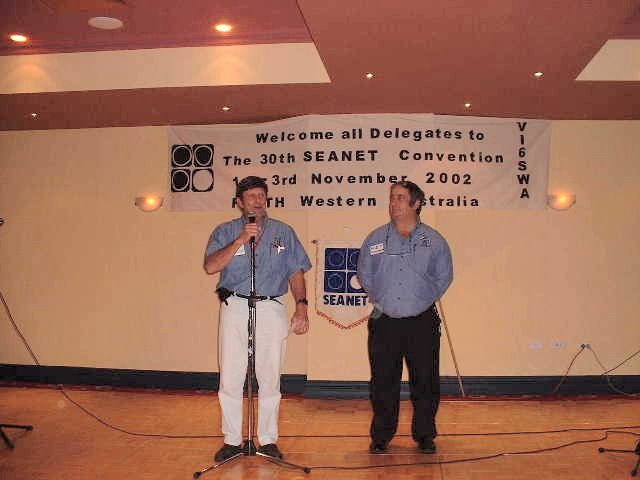
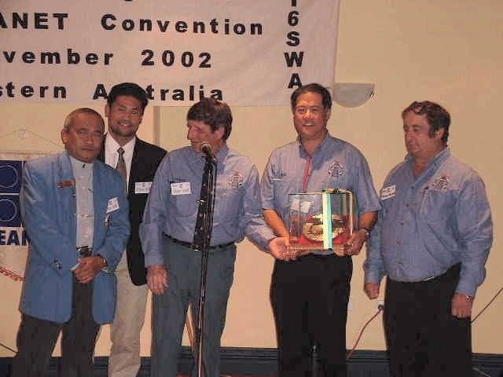
総合司会のVK6ADI(左)／ブルネイ代表(左側)からVKの幹事に記念品が贈られた


|
◎ SEANET CONVENTION 2002
2002年11月1日-3日の3日間、西オーストラリアのパース(Perth)で第30回SEANET Conventionが開催された。
各国持ち回りのSEANET・Conventionがオーストラリアで開催されるのは、1997年11月14日-17日のダーウィン(VK8)大会以来。
この時には記念局としてVK8SEAが運用され、11月15日には6mでもJAからQSO出来ている。
◎ SEANET PROGRAMs
01th November 2002(Friday)
Arrival Free time own Arrangements
13:00-16:00 Registration & Sponsor Display
18:45-19:00 Pre-dinner gathering
19:00- Dinner & Entertainment(Perth International Folk Dance Group)
02th November 2002(Saturday)
07:00-08:30 Breakfast Own Expense
08:30 Gather for tour in lobby
09:00 Coach Departs
09:30 Photo South Perth
09:45 Continue with tour Caversham Wildlife Park
13:00 Lunch Esplanado Hotel Fremantle
14:30 Continue tour
16:30 Return Hotel
17:00-18:30 Free time & Sponsors Display in Montana Room
19:00 Gather for Dinner
20:00 SEANET Sked
Function Commences
Speeches
Presentation/Awards
20:30 Entertainment By Silken Rhythms
03th November 2002(Sunday)
07:00-08:45 Breakfast Own Expense
08:45 Leave for Ham Fest
Local fair to entertain XYLs
11:00 Return to Hotel
11:30 Plenary Session Commences
12:30 Lunch
◎01th November 2002(Friday)
初日のSEANET Convention・前夜祭は、Acacia Hotelの宴会場でのディナーパーティー。
今回の幹事役の一人、VK6ADIの総合司会で始まった懇親会は、VK6DJの挨拶の後、
各円卓ごとに食事をしながらの一年ぶりのEyeball QSOを楽しんだ。 |
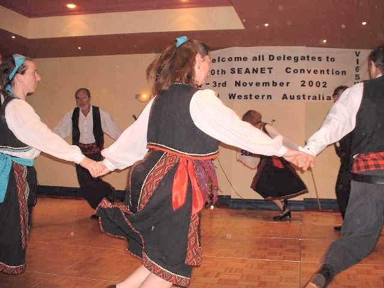
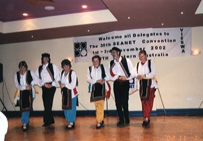
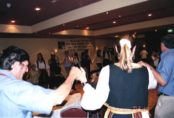
|
◎02th November 2002(Sataurday) 2日目は朝食後、SEANET参加者全員による記念撮影のためSouth Perthの河畔まで2台の大型バスで移動。 絵葉書の様に綺麗なPerthのビル街をバックにお揃いのジーンズのシャツで記念撮影。 |
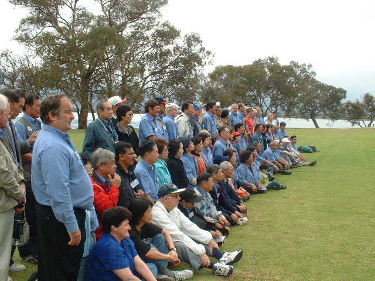
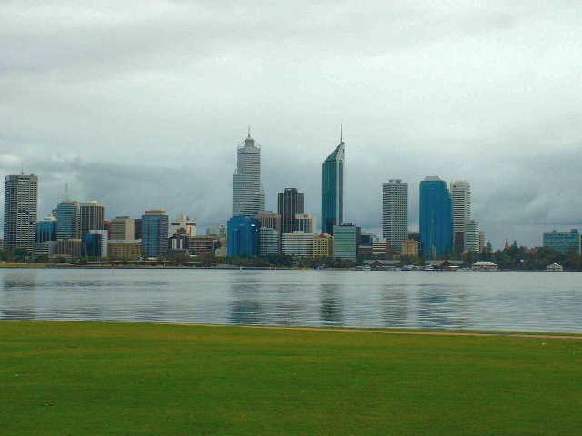
| ◎ 記念撮影を終えた一行は2台のバスで、コアラ、カンガルー、ウオンバットなど、 オーストラリア固有の動物が集められているCaversham Wildlife Parkへと向う。 初めて見る珍獣に歓声を上げ、ウオンバットを抱き、餌をねだるカンガルーと遊んだり、 皆、童心に返って嬉しそう。 |
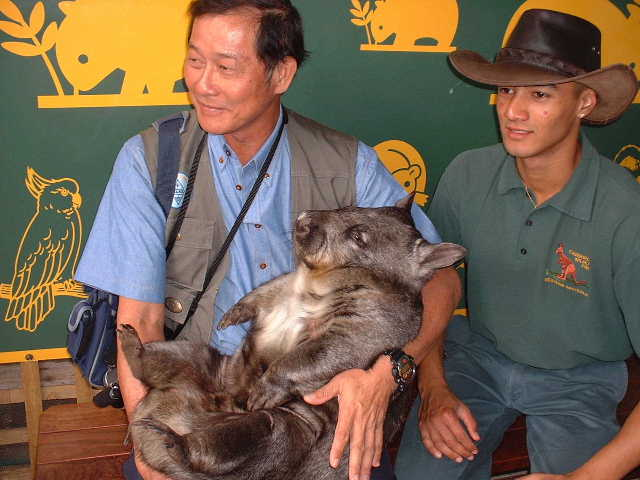
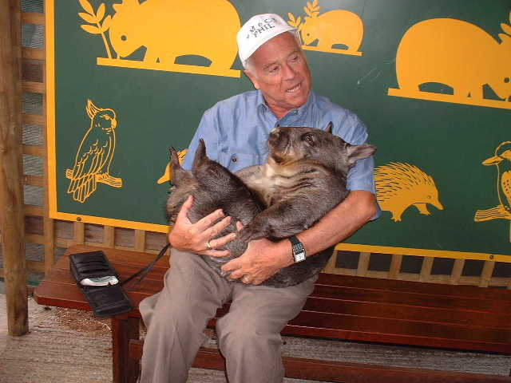
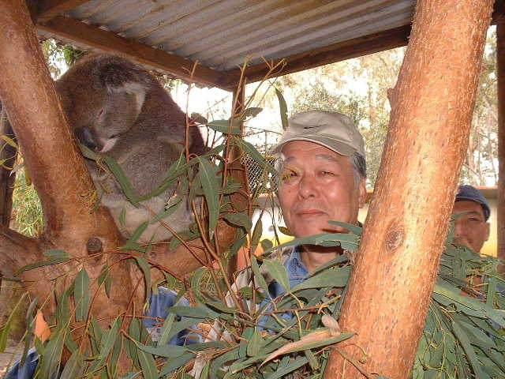
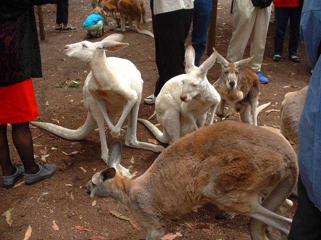
|
SEANET CONVENTION 2002
◎ 午後7時過ぎ、Dinnerを取りながらの恒例のSEANET 2002の本番が始まった。
主催者側の挨拶に続いて、30周年を迎えた歴代SEANETを"画像"で紹介、8月に行なわれたSEANET Contestの表彰式、
各国の有志による合唱、演舞など、大会は夜のふけるのも忘れ、夜遅くまで続いた。 |
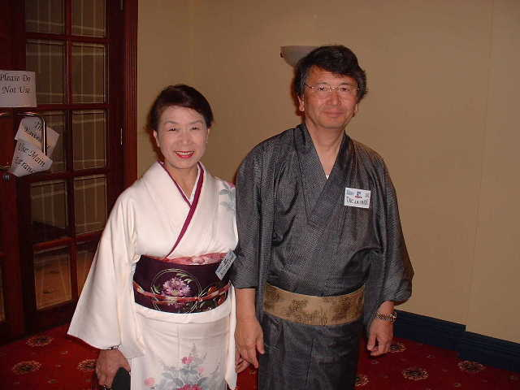
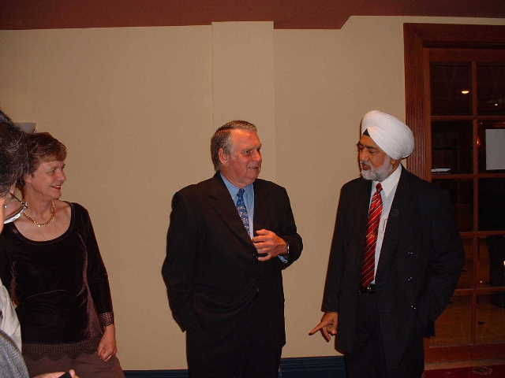
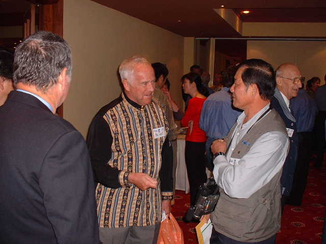
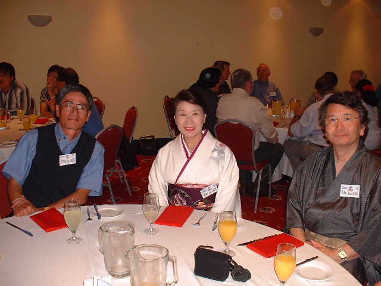
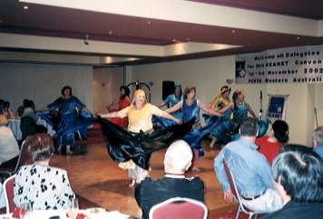
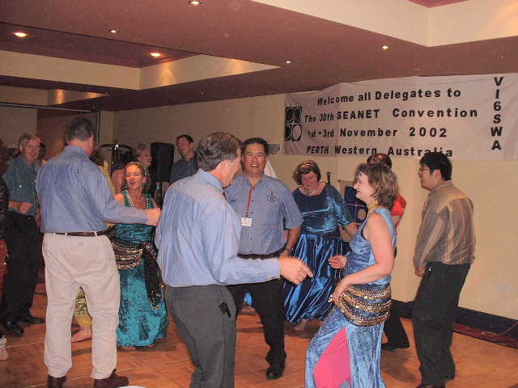
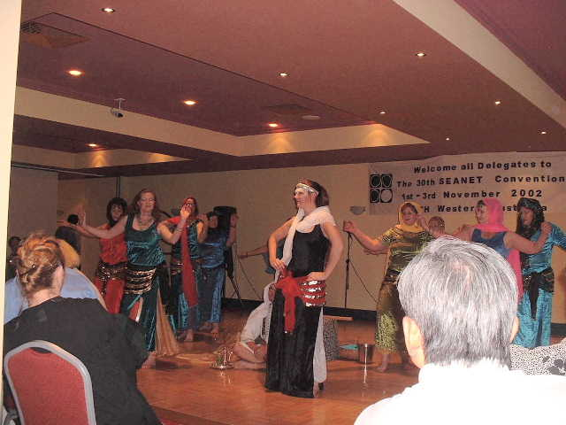
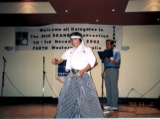
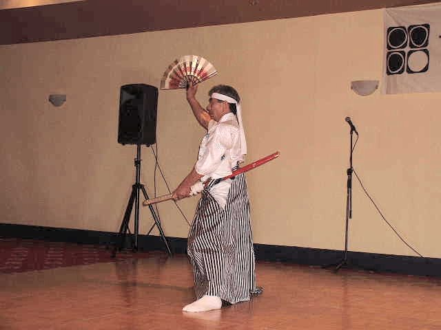
|
◎ Hamfest 2002 in West Australia
最終日、11月3日(日)の午前中は、バス2台に分乗しPerth市内で開催されている「Hamfest 2002」を見学。
会場となっているこじんまりした"体育館"には、地元の販売店の展示と共に、
ローカル局が持ち寄った"ジャンク"が並べられている。
全部まとめてもJARLの「 HAM Fear」ならジャンク屋さん4、5軒程度の"極小"規模ながら、地元ハムで結構賑わっていた。 |
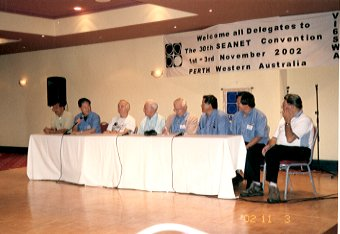
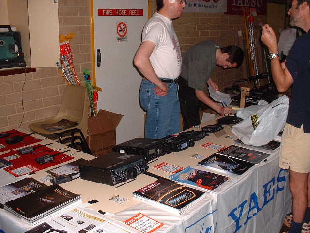
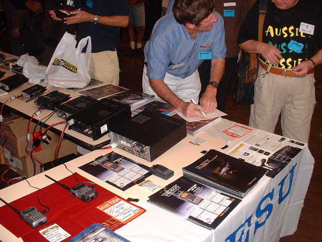
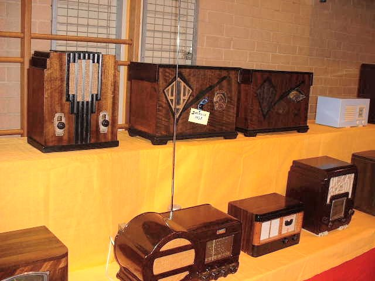
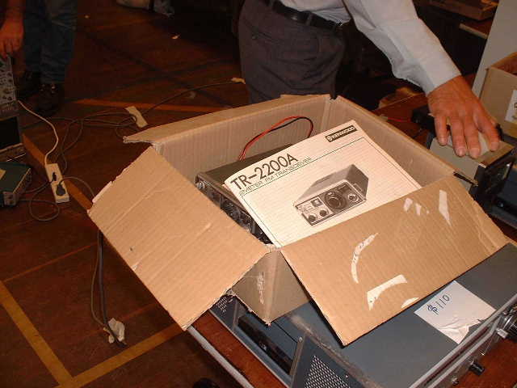
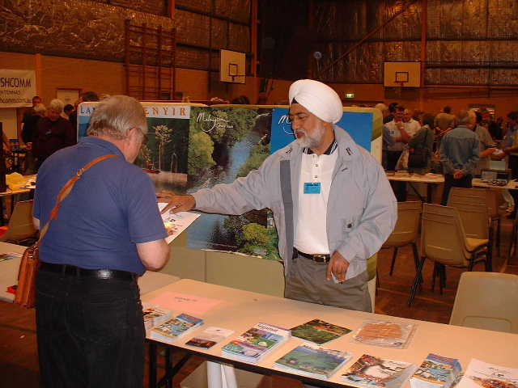
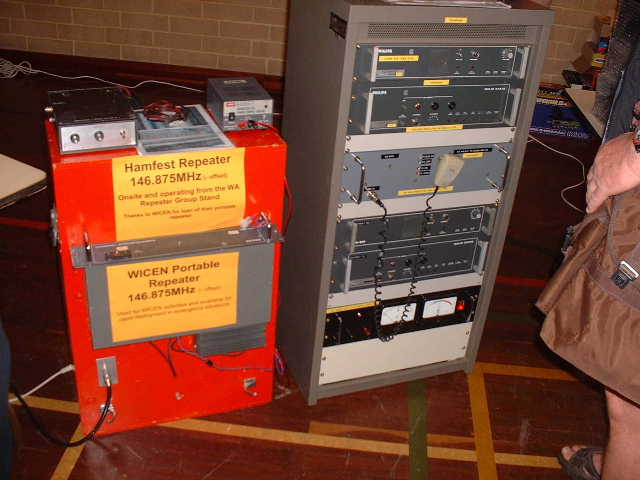
 |
Australia(VK6)の6m |